1.1 작성 목적
본 문서의 목적은 일반 사용자가 IDN 서비스에서 제공하는 주요 기능을 정확하게 이해하고, 실제 사용 환경에서 필요한 작업을 원활하게 수행할 수 있도록 지원하는 데 있다.
Operational Documentation
일반 사용자가 홈, 네트워크, 요청, 설정 화면을 처음 접해도 바로 따라갈 수 있도록 실제 사용 순서에 맞춰 정리한 운영 가이드다. 화면 이름 설명에 그치지 않고 먼저 볼 항목, 눌러야 할 버튼, 작업 후 확인할 결과까지 함께 안내한다.
본 문서는 ㈜클라우드플러그에서 개발한 IDN 서비스 사용자를 대상으로 시스템의 주요 기능과 화면 구성, 그리고 각 기능별 사용 방법을 이해하기 쉽도록 설명하기 위해 작성된 문서이다.
일반 사용자는 홈, 네트워크, 멤버, 요청, 설정 메뉴를 사용하여 자신의 연결 상태와 요청 현황을 확인하고, 필요한 범위 내에서 네트워크와 장치를 관리할 수 있다.
실제 사용에서는 로그인 후 홈 화면에서 오늘 확인할 항목을 점검하고, 네트워크와 멤버 정보를 확인한 다음, 요청 처리와 설정 변경으로 이어서 작업하는 흐름이 가장 자연스럽다.
본 문서의 목적은 일반 사용자가 IDN 서비스에서 제공하는 주요 기능을 정확하게 이해하고, 실제 사용 환경에서 필요한 작업을 원활하게 수행할 수 있도록 지원하는 데 있다.
일반 사용자는 로그인 화면에서 계정 ID와 비밀번호를 입력해 시스템에 접속한다.
▶메뉴 위치: 로그인 화면
▶기능 설명:
일반 사용자 계정으로 시스템에 접속한다.
▶사용 절차:
1. 로그인 화면을 연다.
2. 아이디와 비밀번호를 입력한다.
3. 로봇 확인 항목을 선택한다.
4. 로그인 버튼을 클릭한다.
5. 인증 성공 시 홈 화면으로 이동한다.
▶입력 항목:
| 항목 | 설명 | 입력 가이드 |
|---|---|---|
| 아이디 | 사용자 계정 ID | 필수 입력 |
| 비밀번호 | 계정 비밀번호 | 필수 입력 |
▶처리 결과 / 유의사항:
아이디 오입력 여부를 확인한다.
비밀번호 오입력 여부를 확인한다.
비밀번호 만료 여부를 확인한다.
계정 잠금 여부를 확인한다.
로그인 후 상단 메뉴에서 홈, 네트워크, 멤버, 요청, 설정 메뉴를 사용할 수 있다.
▶스크린샷:
| 화면명 | 이미지 |
|---|---|
| 로그인 화면 | 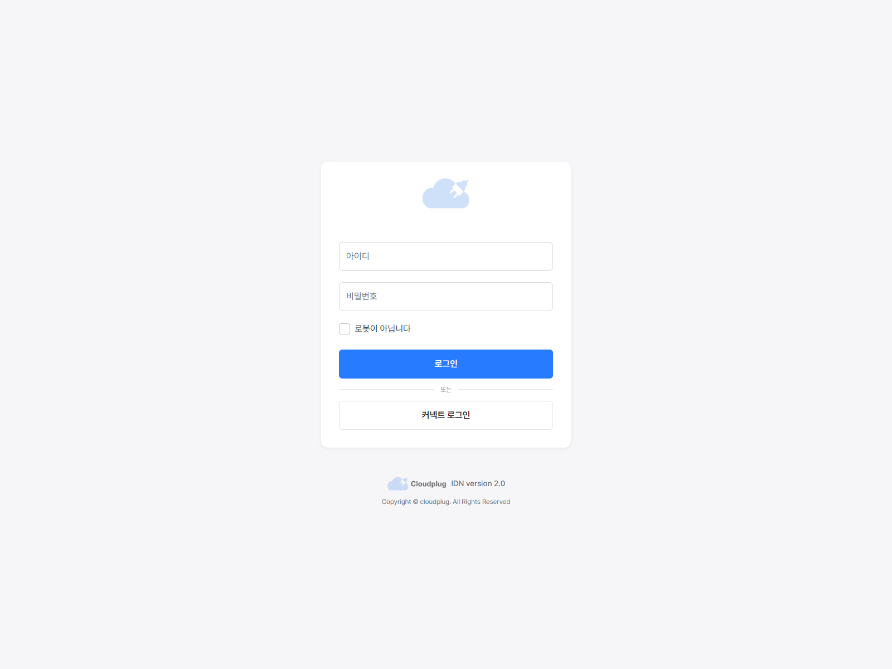 |
아이디 또는 비밀번호를 잘못 입력한 경우 로그인에 실패할 수 있다.
계정이 비활성화된 경우 로그인이 제한된다.
일정 횟수 이상 비밀번호 입력을 실패해 잠금된 계정은 로그인이 제한된다.
관리자에 의해 계정이 차단된 경우 접속할 수 없다.
로그인 실패 시 화면에 표시되는 메시지를 먼저 확인하고, 필요한 경우 관리자에게 문의해 계정 상태를 점검한다.
공통 영역은 모든 화면에서 제공되며 메뉴 이동과 사용자 관련 기능을 제공한다.
| 메뉴 | 설명 |
|---|---|
| 홈 | 개인 알림과 참여 네트워크 요약 확인 |
| 네트워크 | 내가 참여한 네트워크 관리 |
| 멤버 | 조직/부서 기준 멤버 조회 |
| 요청 | 받은 요청, 보낸 요청 조회 |
| 설정 | 프로필, 비밀번호, 계정 삭제 |
헤더 좌측에는 서비스 로고가 표시된다.
로고를 클릭하면 홈 화면으로 이동한다.
시스템에서 발생한 주요 이벤트 및 안내 사항을 사용자에게 전달하는 영역이다.
알림 아이콘을 통해 알림 목록을 조회할 수 있다.
| 항목 | 설명 |
|---|---|
| 알림 유형 | 정보 알림, 보안 알림 등 이벤트 성격에 따른 구분 |
| 알림 내용 | 사용자에게 전달되는 이벤트에 대한 설명 |
| 발생 시점 | 알림이 발생한 날짜 및 시간 |
| 읽음 상태 표시 | 알림 확인 여부를 표시하는 상태 정보 |
현재 로그인한 사용자 계정 정보 확인 및 로그아웃 기능을 제공하는 영역이다.
헤더 우측의 사용자 아이콘을 클릭해 계정 정보를 확인한다.
| 항목 | 설명 |
|---|---|
| 사용자 계정명 | 현재 로그인한 사용자의 계정명을 확인 |
| 사용자 이메일 | 현재 로그인한 사용자의 이메일 확인 |
| 사용자 역할 | 현재 로그인한 사용자의 역할 확인 |
| 로그아웃 | 로그인 세션 종료 버튼 |
아이디 오입력 여부
비밀번호 오입력 여부
비밀번호 만료 여부
계정 잠금 여부
▶메뉴 위치: 상단 메뉴 > 홈
▶기능 설명:
요청/알림 요약과 참여 중인 네트워크 목록을 확인한다.
선택한 네트워크에 속한 내 장치 상태를 상세 영역에서 확인할 수 있다.
처음 사용하는 사용자는 홈을 시작 화면으로 보고 오늘 처리할 일과 현재 상태를 먼저 확인하면 된다.
▶사용 절차:
1. 홈 메뉴를 선택한다.
2. 요청/알림 영역을 확인한다.
3. 참여 중인 네트워크 목록에서 항목을 선택한다.
4. 우측 상세 영역에서 내 장치 상태를 확인한다.
5. 필요 시 요청함 또는 설정으로 이동한다.
▶처리 결과 / 유의사항:
홈 알림은 읽지 않은 항목 기준으로 표시된다.
네트워크 상세에는 해당 네트워크에서 본인에게 연결된 장치만 표시된다.
클라이언트 다운로드와 메뉴얼 다운로드 링크를 시작 화면에서 바로 확인할 수 있다.
장치 상태가 오프라인이면 네트워크 화면에서 해당 장치와 네트워크 상태를 다시 확인한다.
새 초대나 승인 알림이 보이면 요청 화면으로 이동해 실제 처리 상태를 이어서 확인한다.
홈 화면에는 자주 사용하는 주요 기능으로 이동할 수 있는 바로가기 성격의 화면 구성이 제공된다.
| 항목 | 설명 |
|---|---|
| 내 연결 | 사용자가 참여 중인 연결 관리 |
| 멤버 | 사용자 그룹에 속한 멤버 목록 |
| 요청함 | 사용자 요청 상태 및 처리 결과 확인 |
| 고객지원 | 서비스 이용 관련 문의 및 지원 정보 |
홈 화면에서는 참여 중인 연결 목록과 각 연결의 연결 상태를 요약해 표시한다.
`전체 보기`를 클릭하면 네트워크 화면으로 이동해 상세 연결 목록을 확인할 수 있다.
| 항목 | 설명 |
|---|---|
| 연결 이름 | 사용자가 참여 중인 연결 이름 |
| 연결 상태 | 현재 네트워크 연결 상태 |
| 연결 기기 수 | 네트워크에 연결된 사용자 기기 수 |
▶스크린샷:
| 화면명 | 이미지 |
|---|---|
| 홈 화면 | 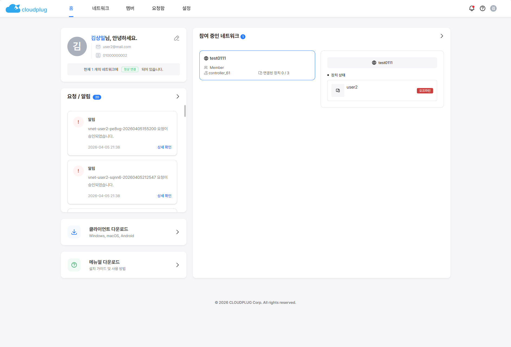 |
▶추가 화면:
| 화면명 | 이미지 |
|---|---|
| 홈 장치 상태 패널 | 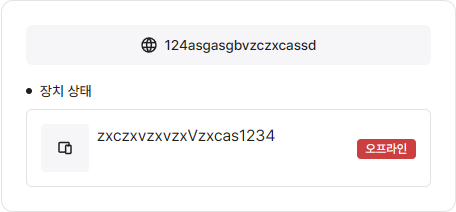 |
▶메뉴 위치: 상단 메뉴 > 네트워크
▶기능 설명:
참여 중인 네트워크 목록을 조회한다.
새 네트워크 생성, 네트워크 상세 보기, 네트워크 수정과 삭제, 장치 생성과 수정, 멤버 초대를 수행할 수 있다.
소유자 여부에 따라 편집 가능 범위가 달라질 수 있다.
네트워크 화면은 실제 사용 자원을 확인하는 핵심 화면으로, 이름보다 상태와 연결 구조를 먼저 읽는 것이 중요하다.
▶화면에서 먼저 이해할 항목:
| 항목 | 설명 |
|---|---|
| 네트워크 이름 | 참여 중인 네트워크를 식별하는 기본 정보 |
| 컨트롤러 | 연결 자원 구성을 확인하는 기준 정보 |
| 네트워크 대역 | 현재 네트워크의 주소 범위를 확인하는 항목 |
▶처리 결과 / 유의사항:
네트워크 소유자는 네트워크 수정, 삭제, 장치 생성, 수정, 삭제, 사용자 초대가 가능하다.
장치 사용자는 본인 장치 별칭 수정이 가능하다.
일반 참여자는 조회 위주로 사용한다.
검색 기준으로 네트워크 이름, 컨트롤러, 네트워크 대역을 사용할 수 있다.
상세 화면에서는 장치 상태, 사용자 할당, 단말 접속 허용, 외부 트래픽 허용 여부를 함께 확인한다.
새 네트워크 생성 전에는 함께 사용할 멤버를 먼저 정리하면 작업이 빠르다.
네트워크 작업 후에는 목록 반영 여부와 상세 화면의 장치 상태 변화를 함께 확인해야 정상이다.
참여 중인 네트워크를 목록에서 조회하고 검색과 필터를 사용할 수 있다.
1. 네트워크 메뉴를 선택한다.
2. 네트워크 이름, 컨트롤러, 네트워크 대역 기준으로 검색한다.
3. 필요 시 암호화 알고리즘과 기기 인증 여부 필터를 적용한다.
4. 원하는 네트워크 카드를 선택해 상세 화면을 연다.
| 화면명 | 이미지 |
|---|---|
| 네트워크 화면 | 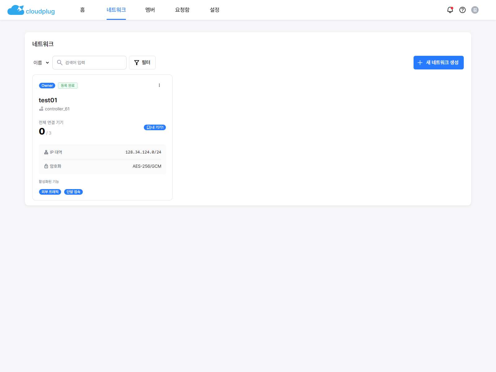 |
원클릭 오케스트레이션은 3단계로 진행되며, 먼저 사용자를 선택한 뒤 네트워크 정보를 입력하고 마지막 단계에서 요약 정보를 확인한 후 생성한다.
1. `새 네트워크 생성` 버튼을 클릭한다.
2. 1단계에서 함께 사용할 사용자를 선택한다.
3. 2단계에서 별칭, 컨트롤러, 중계서버 정보를 입력한다.
4. 3단계에서 요약 정보를 확인한 후 생성한다.
5. 생성 후 목록에 새 네트워크가 보이는지 확인한다.
| 화면명 | 이미지 |
|---|---|
| 원클릭 오케스트레이션 1단계 - 사용자 선택 | 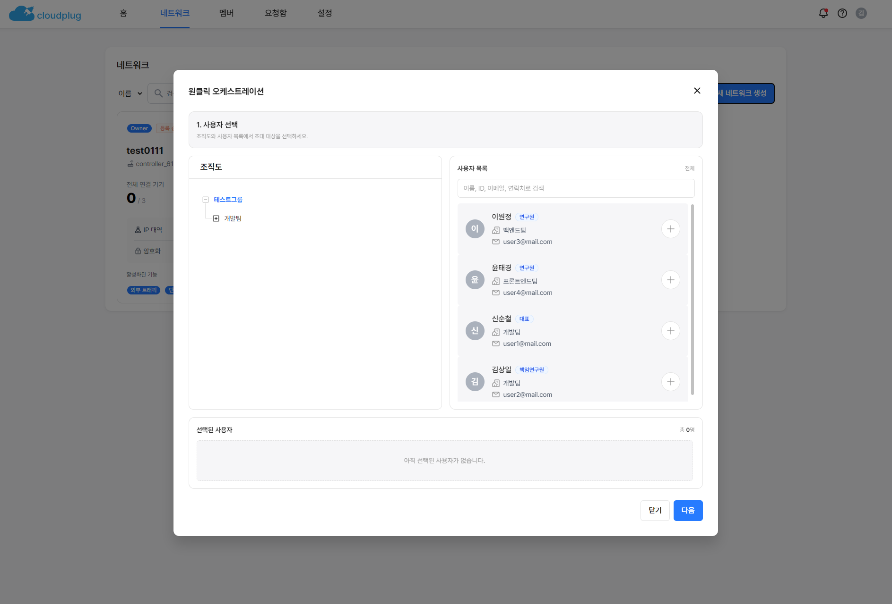 |
| 원클릭 오케스트레이션 2단계 - 네트워크 정보 입력 | 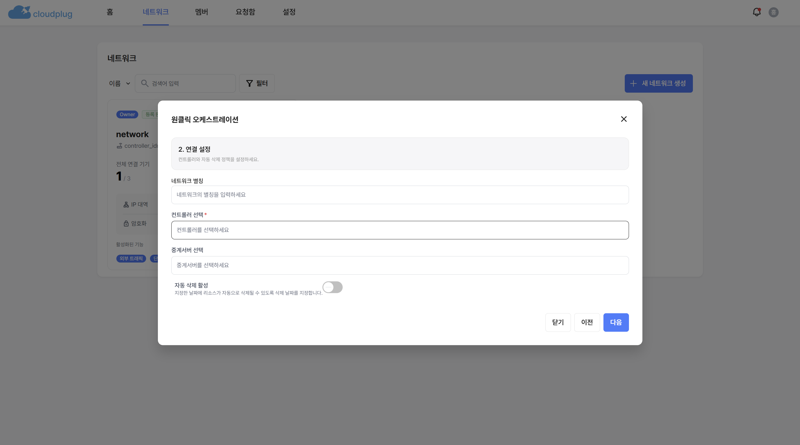 |
| 원클릭 오케스트레이션 3단계 - 요약 정보 확인 | 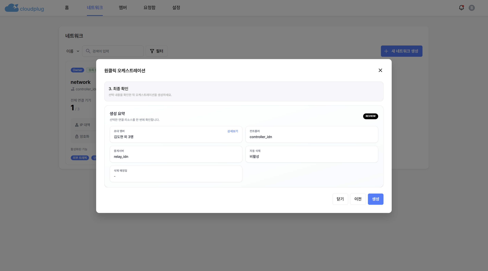 |
네트워크 상세 화면에서 상단 정보줄, 좌측 장치 목록, 중앙 연결도, 장치 상태를 확인한다.
1. 네트워크 카드를 클릭한다.
2. 상단 정보줄에서 컨트롤러, IP 대역, 암호화 방식, 기기 인증 여부를 확인한다.
3. 좌측 장치 목록과 중앙 연결도에서 장치를 선택한다.
4. 장치명, 주소, 상태, 사용자, 역할, 접속 허용 상태를 확인한다.
기기 목록 영역은 연결의 소유 여부에 따라 기능과 표기 방식이 다르게 제공된다.
연결 소유자인 경우에는 기기 목록 상단에 `장치 생성` 버튼이 표시되고, 각 기기 항목의 메뉴 아이콘에서 `초대`, `수정`, `삭제`를 실행할 수 있다.
사용자에게 할당된 기기에는 `내 기기` 뱃지가 표시된다.
할당된 연결인 경우에는 `장치 생성` 버튼과 기기별 메뉴 아이콘이 표시되지 않으며, 조회 중심으로 사용할 수 있다.
| 화면명 | 이미지 |
|---|---|
| 네트워크 상세 화면 | 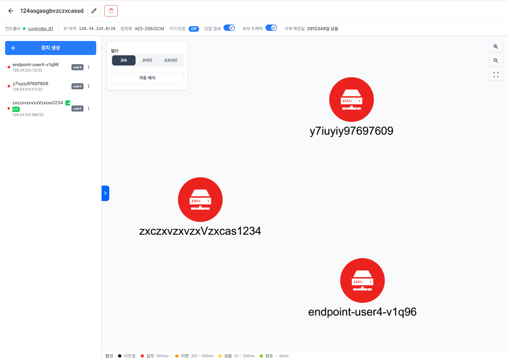 |
네트워크 카드 또는 상세 화면의 작업 메뉴에서 수정 화면을 열어 별칭과 운영 옵션을 변경한다.
1. 네트워크 카드 우측 상단 `더보기` 메뉴에서 `수정`을 선택한다.
2. 별칭, 연결 장비, 자동 삭제 조건을 수정한다.
3. 저장 후 목록과 상세 화면에 반영됐는지 확인한다.
수정 시 주로 확인하는 항목은 네트워크 별칭, 삭제 예정일, 단말 접속 허용, 외부 트래픽 허용이다.
| 화면명 | 이미지 |
|---|---|
| 네트워크 수정 화면 | 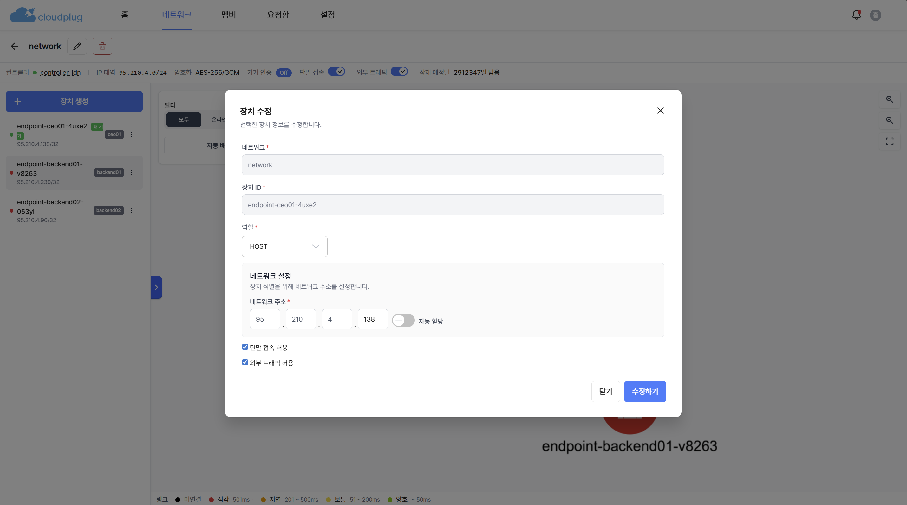 |
네트워크 카드 또는 상세 화면의 삭제 메뉴에서 삭제 확인 팝업을 거쳐 네트워크를 제거한다.
1. `더보기` 메뉴에서 `삭제`를 선택한다.
2. `네트워크 삭제 확인` 팝업에서 대상을 확인한다.
3. `삭제` 버튼을 눌러 확정한다.
4. 네트워크 목록에서 제거 여부를 확인한다.
네트워크 삭제 시 포함된 장치와 연결 정보에도 영향이 있을 수 있으므로 참여 멤버와 사용 목적을 먼저 확인한다.
| 화면명 | 이미지 |
|---|---|
| 네트워크 삭제 확인 팝업 | 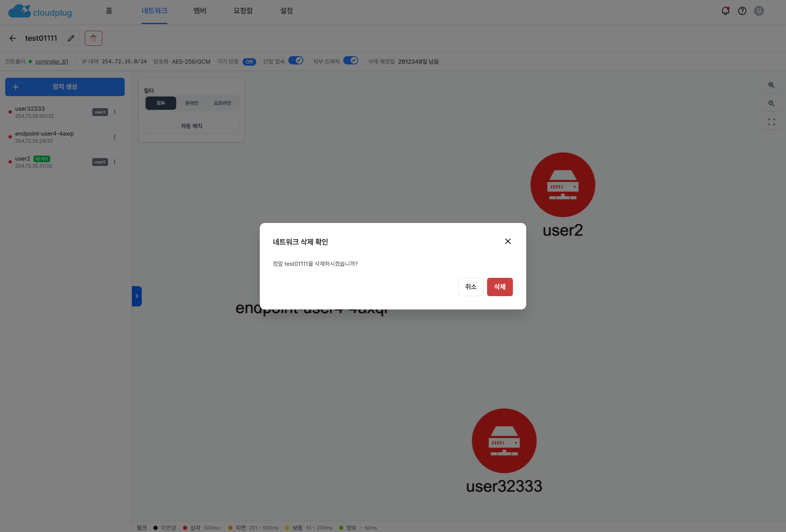 |
네트워크 상세 화면의 `장치 생성` 버튼으로 새 장치를 추가한다.
1. 네트워크 상세 화면에서 `장치 생성` 버튼을 클릭한다.
2. 연결, 기기 이름, 역할, 네트워크 주소 정보를 입력한다.
3. 저장 후 좌측 장치 목록과 연결도에 새 장치가 표시되는지 확인한다.
이 기능은 연결 소유자에게만 제공되며, 생성 요청은 승인 후 실제 기기 정보에 반영된다.
| 항목 | 설명 | 입력 가이드 |
|---|---|---|
| 연결 | 기기가 속할 연결 | 토폴로지 화면에서 선택된 연결로 자동 지정 |
| 기기 이름 | 기기 식별 이름 | 영문, 숫자, 일부 특수문자(-)만 사용 가능하며 중복 불가 |
| 역할 | 연결 내 기기의 역할 | HOST 또는 GATEWAY 중 하나를 선택 |
| 네트워크 주소 | 가상 IP 주소 | 자동 배정 또는 8, 16, 24 비트 단위로 직접 입력 |
| 네트워크 인터페이스 | 장치 연결 통로 명칭 | GATEWAY 역할일 때 서버 인터페이스 이름 입력 |
| UUID | 기기 고유 식별 번호 | GATEWAY 역할일 때 서버 소프트웨어에서 발급된 고유 번호 입력 |
| MAC 주소 | 기기 물리 식별 번호 | GATEWAY 역할일 때 `00:11:22:33:44:55` 형식으로 입력 |
| 리다이렉트 | 트래픽 전환 기능 설정 | 토글 스위치로 사용 여부 설정 |
| 리다이렉트 인터페이스 | 인터페이스 명칭 | 트래픽이 전환될 대상 인터페이스 명칭 입력 |
| 리다이렉트 IP | 리다이렉트 대상 IP | `리다이렉트 IP 추가` 버튼으로 대상 IP 주소 입력 |
| 단말 접속 | 장치 접속 허용 여부 | 체크 시 가상 네트워크 접속 허용 |
| 외부 트래픽 | 외부 인터넷 통신 허용 여부 | 체크 시 외부 인터넷 통신 허용 |
| 화면명 | 이미지 |
|---|---|
| 장치 생성 화면 | 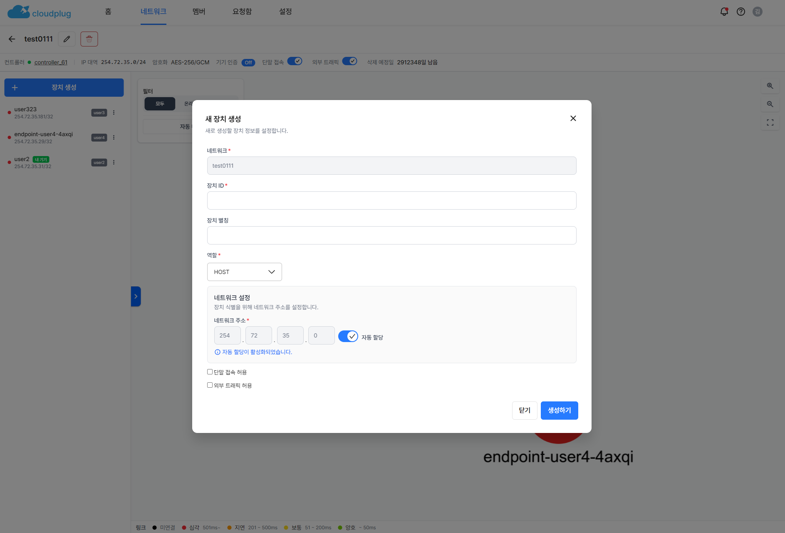 |
장치 액션 메뉴에서 수정 화면을 열어 별칭 또는 네트워크 정보를 변경한다.
1. 좌측 장치 목록에서 장치 오른쪽 `더보기` 메뉴를 클릭한다.
2. `수정`을 선택한다.
3. 장치 정보를 수정한다.
4. 저장 후 장치 정보 패널에 반영됐는지 확인한다.
이 기능은 연결 소유자에게만 제공되며, 수정 요청은 승인 후 실제 기기 정보에 적용된다.
| 항목 | 설명 | 입력 가이드 |
|---|---|---|
| 연결 | 기기가 속한 연결 | 수정 불가 |
| 장치 이름 | 단말 식별 이름 | 수정 불가 |
| 네트워크 주소 | 가상 IP 주소 | 동작 중인 장치는 수정할 수 없으며 자동 또는 직접 입력 가능 |
| 단말 접속 | 장치 접속 허용 여부 | 체크 시 가상 네트워크 접속 허용 |
| 외부 트래픽 | 외부 인터넷 통신 허용 여부 | 체크 시 외부 인터넷 통신 허용 |
| 화면명 | 이미지 |
|---|---|
| 장치 수정 화면 | 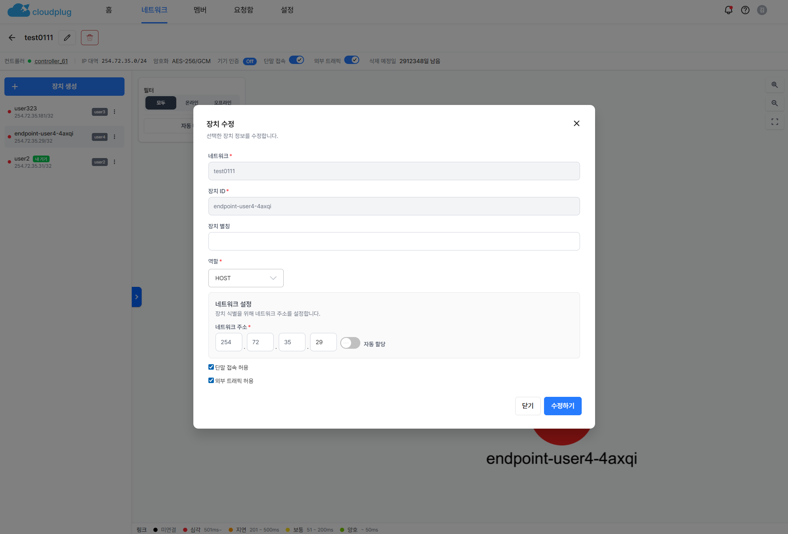 |
장치 액션 메뉴에서 삭제를 선택해 장치를 제거한다.
1. 장치의 액션 메뉴에서 `삭제`를 클릭한다.
2. 삭제 확인 팝업에서 장치 이름을 확인한다.
3. `삭제`를 눌러 확정한다.
4. 장치 목록과 연결도에서 제거 여부를 확인한다.
이 기능은 연결 소유자에게만 제공되며, 삭제 요청은 승인 후 실제 삭제된다.
| 화면명 | 이미지 |
|---|---|
| 장치 삭제 확인 팝업 | 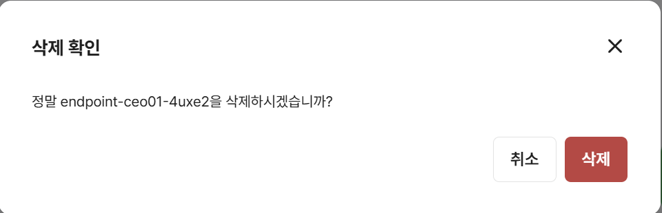 |
장치 액션 메뉴의 초대 기능으로 멤버를 찾아 네트워크 참여를 요청한다.
1. 장치의 액션 메뉴에서 `초대`를 클릭한다.
2. 사용자명, ID, 이메일, 휴대폰번호로 사용자를 검색한다.
3. 초대할 사용자를 선택한다.
4. 저장 후 장치 할당 정보 또는 요청 상태를 확인한다.
해당 장치에 이미 사용자가 할당되어 있거나 사용자 할당 결재가 진행 중이면 초대할 수 없다.
| 화면명 | 이미지 |
|---|---|
| 멤버 초대 팝업 | 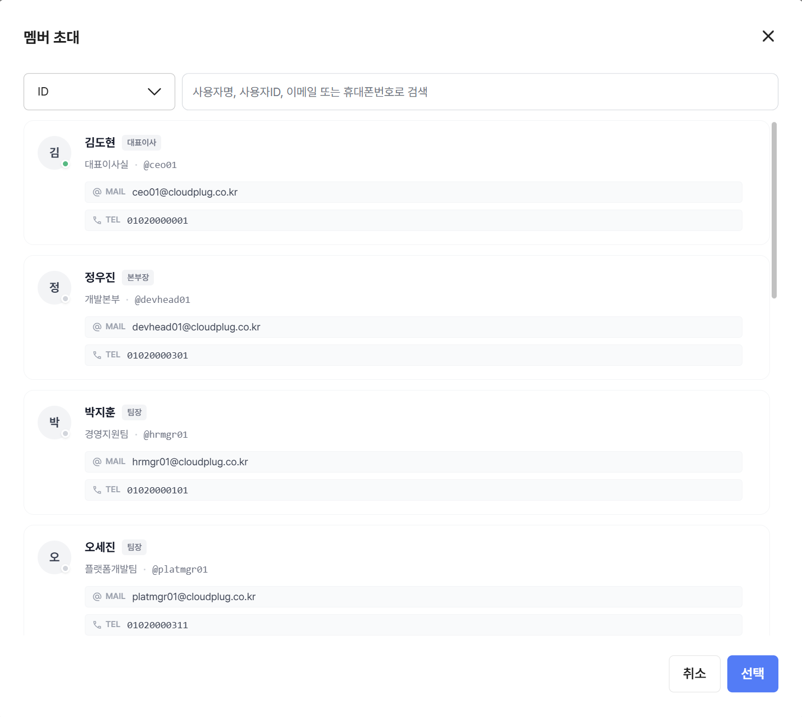 |
사용자가 할당된 장치의 액션 메뉴에서 할당 해제를 수행한다.
1. 사용자 할당이 된 장치의 액션 메뉴에서 `할당 해제`를 클릭한다.
2. 확인 팝업에서 해제 대상을 다시 확인한다.
3. `할당 해제`를 눌러 확정한다.
4. 장치 사용자 정보가 비워졌는지 확인한다.
해당 기기에 할당 해제 결재가 진행 중이면 해제할 수 없으며, 연결 삭제 예정일이 도달하면 장치와 함께 할당 정보도 자동 삭제될 수 있다.
| 화면명 | 이미지 |
|---|---|
| 장치 할당 해제 확인 | 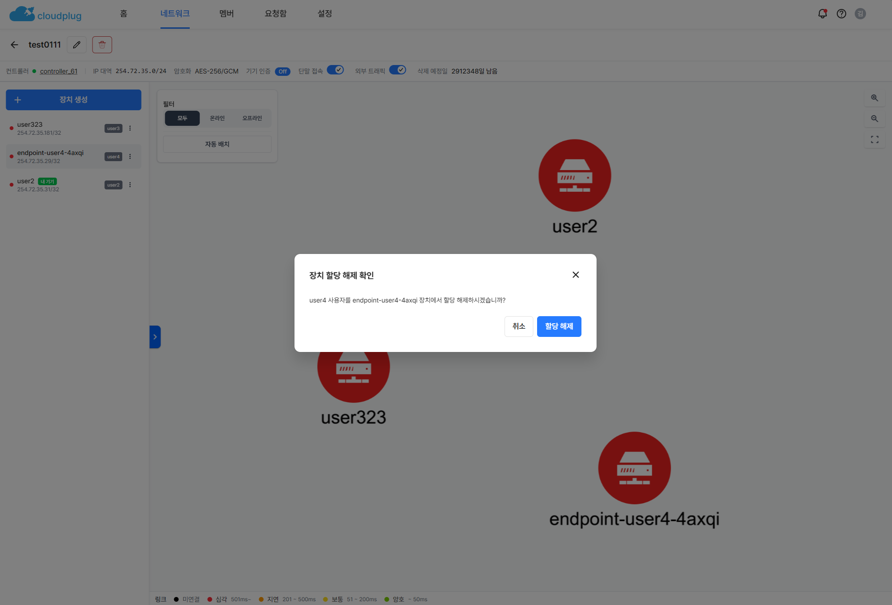 |
본인에게 할당된 장치의 액션 메뉴에서 `별칭 수정`을 실행한다.
1. 본인에게 할당된 장치의 액션 메뉴에서 `별칭 수정`을 클릭한다.
2. 새 별칭을 입력한다.
3. 저장 후 장치명 표시가 바뀌었는지 확인한다.
| 화면명 | 이미지 |
|---|---|
| 별칭 수정 화면 | 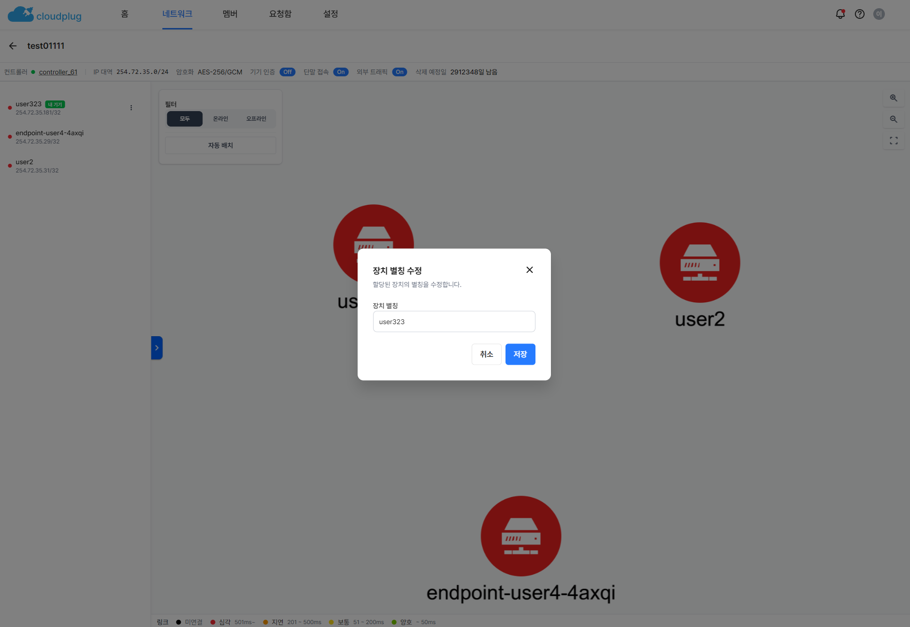 |
▶메뉴 위치: 상단 메뉴 > 멤버
▶기능 설명:
조직 트리 기준으로 멤버를 조회한다.
이름, 아이디, 연락처, 이메일 기준 검색이 가능하다.
▶사용 절차:
1. 멤버 메뉴를 선택한다.
2. 좌측 조직 트리에서 부서를 선택한다.
3. 검색 조건을 입력한다.
4. 결과 목록에서 멤버 정보를 확인한다.
▶입력 항목:
| 항목 | 설명 | 입력 가이드 |
|---|---|---|
| 검색 조건 | 조회 기준 | 아이디 또는 이름 등 |
| 검색어 | 멤버 조회 키워드 | 부분 검색 가능 |
▶화면 내 주요 버튼:
| 버튼명 | 설명 |
|---|---|
| 검색 | 검색 조건에 따라 멤버를 조회한다. |
▶처리 결과 / 유의사항:
선택한 부서의 하위 부서 구성원까지 함께 조회된다.
멤버 초대 대상을 찾을 때는 부서 트리와 검색 조건을 함께 사용하는 것이 효율적이다.
네트워크에 초대할 대상을 찾을 때 가장 먼저 확인하면 좋다.
▶스크린샷:
| 화면명 | 이미지 |
|---|---|
| 멤버 화면 | 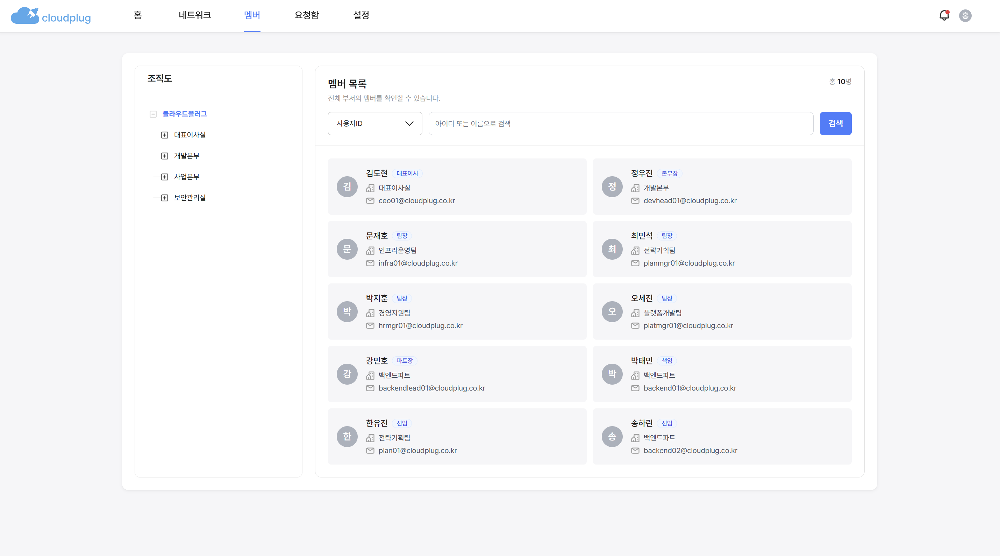 |
▶메뉴 위치: 상단 메뉴 > 요청
▶기능 설명:
받은 요청과 보낸 요청을 분리해 조회한다.
상태별로 전체, 대기, 승인, 반려 요청을 확인한다.
받은 요청 중 승인 권한이 있는 경우 처리 기능이 제공될 수 있다.
같은 요청을 다시 보내기 전에 현재 상태를 먼저 확인하는 화면이다.
▶사용 절차:
1. 요청 메뉴를 선택한다.
2. `받은 요청` 또는 `보낸 요청` 탭을 선택한다.
3. 상태 필터를 선택한다.
4. 요청 카드를 확인한다.
5. 권한이 있는 경우 요청을 승인 또는 반려한다.
▶처리 결과 / 유의사항:
승인/반려 기능은 결재 권한이 있는 사용자에게만 적용될 수 있다.
실시간 이벤트 수신 시 목록이 갱신된다.
`받은 요청` 탭에서는 대기 요청을 처리하고 `보낸 요청` 탭에서는 현재 승인 상태를 확인한다.
반려된 요청은 반려 사유를 확인한 뒤 내용을 수정해 다시 요청해야 한다.
`검토 중` 상태에서 다시 같은 요청을 보내면 중복 작업이 되므로 먼저 기존 요청의 진행 상태를 확인한다.
상태 배지와 하단 안내 문구를 함께 읽으면 승인 완료, 검토 중, 반려 사유를 빠르게 구분할 수 있다.
`받은 요청`과 `보낸 요청` 탭을 나눠 현재 처리 대상과 내가 올린 요청 상태를 확인한다.
1. 요청 메뉴를 선택한다.
2. `받은 요청` 또는 `보낸 요청` 탭을 선택한다.
3. `전체`, `대기`, `승인`, `반려` 상태 필터를 적용한다.
4. 상태 배지, 요청 종류, 자원 종류, 하단 안내 영역을 함께 읽는다.
| 화면명 | 이미지 |
|---|---|
| 받은 요청 화면 | 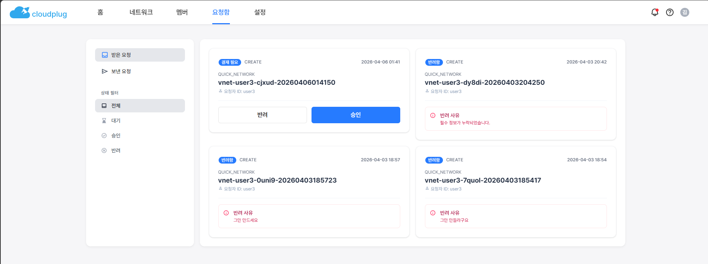 |
| 보낸 요청 화면 | 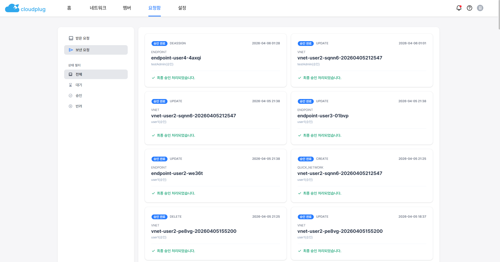 |
대기 상태의 받은 요청을 승인해 요청을 완료한다.
1. `받은 요청` 탭에서 대기 상태 요청을 선택한다.
2. 카드 하단의 `승인` 버튼을 클릭한다.
3. 확인 팝업에서 승인 여부를 다시 확인한다.
4. 처리 후 상태가 바뀌었는지 확인한다.
| 화면명 | 이미지 |
|---|---|
| 받은 요청 승인 화면 | 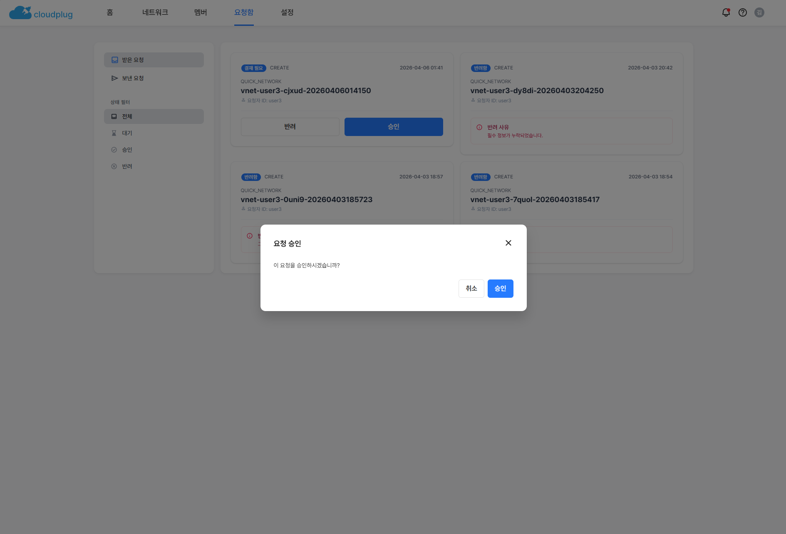 |
반려 사유를 입력해 요청을 거절한다.
1. `받은 요청` 탭에서 대기 상태 요청을 선택한다.
2. 카드 하단의 `반려` 버튼을 클릭한다.
3. 반려 사유를 입력한다.
4. 처리 후 요청 결과와 반려 사유를 다시 확인한다.
| 화면명 | 이미지 |
|---|---|
| 받은 요청 반려 화면 | 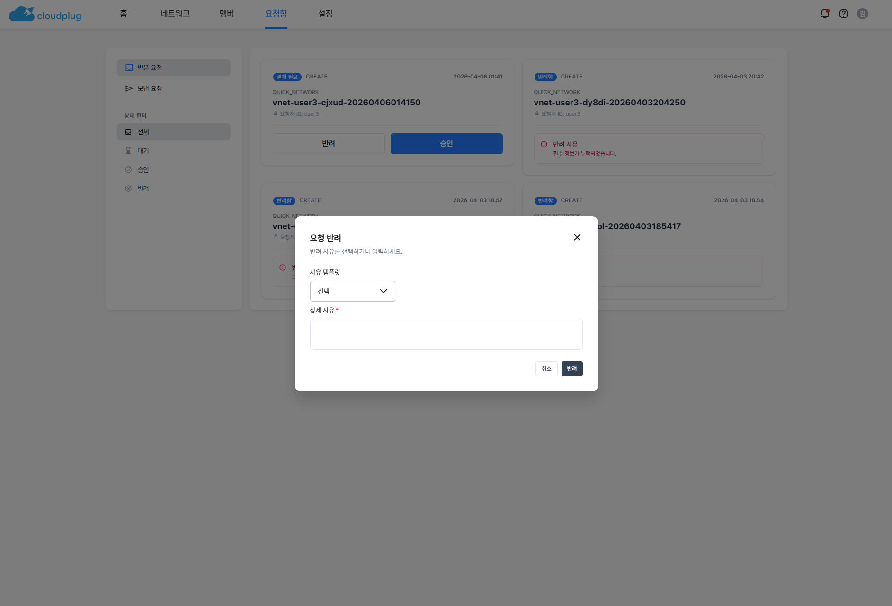 |
▶메뉴 위치: 상단 메뉴 > 설정
▶기능 설명:
프로필 수정, 비밀번호 변경, 계정 삭제를 수행한다.
개인 정보와 접속 보안을 정리하는 마지막 점검 화면으로 이해하면 된다.
▶사용 절차:
1. 설정 메뉴를 선택한다.
2. 프로필 탭에서 이름, 연락처, 이메일을 수정한다.
3. 보안 탭에서 현재 비밀번호와 새 비밀번호를 입력한다.
4. 계정 삭제 탭에서 삭제 여부를 확인한다.
▶입력 항목:
| 항목 | 설명 | 입력 가이드 |
|---|---|---|
| 이름 | 사용자 이름 | 2자 이상 |
| 휴대폰 번호 | 연락처 | `010-0000-0000` 형식 |
| 이메일 | 이메일 주소 | 형식 검증 적용 |
| 현재 비밀번호 | 기존 비밀번호 | 8~16자 정책 |
| 새 비밀번호 | 변경 비밀번호 | 8~16자 정책 |
| 새 비밀번호 확인 | 변경 비밀번호 확인 | 동일 값 입력 |
▶화면 내 주요 버튼:
| 버튼명 | 설명 |
|---|---|
| 변경사항 저장 | 프로필 정보를 저장한다. |
| 비밀번호 변경 | 비밀번호를 변경한다. |
| 계정 삭제 | 계정을 삭제한다. |
▶처리 결과 / 유의사항:
비밀번호는 영문, 숫자, 특수문자 포함 8~16자 검증이 적용된다.
계정 삭제는 되돌릴 수 없는 작업으로 확인된다.
설정 화면은 프로필, 보안, 계정 삭제 탭으로 구성된다.
현재 비밀번호가 맞지 않거나 형식 기준을 만족하지 못하면 비밀번호가 저장되지 않는다.
프로필 변경 후에는 저장 완료 메시지와 최신 연락처 반영 여부를 함께 확인한다.
▶스크린샷:
| 화면명 | 이미지 |
|---|---|
| 설정 화면 | 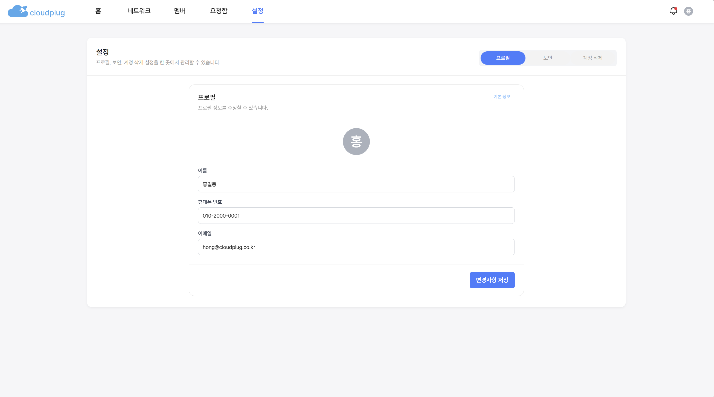 |
▶추가 화면:
| 화면명 | 이미지 |
|---|---|
| 설정 보안 탭 | 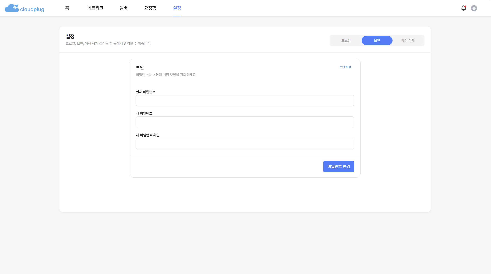 |
| 설정 계정 삭제 탭 | 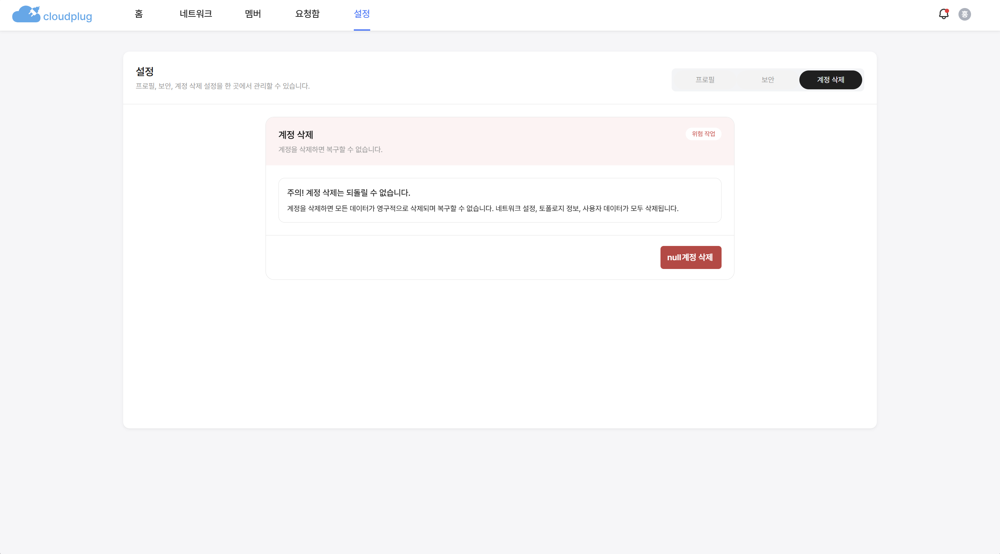 |
| 계정 삭제 확인 팝업 | 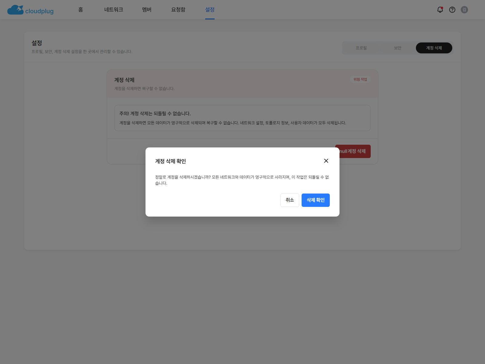 |
홈 알림과 최근 요청이 있는지 본다.
참여 중인 네트워크 수와 장치 온라인/오프라인 상태를 확인한다.
요청 화면에서 대기 또는 검토 중 상태가 남아 있는지 확인한다.
초대할 사용자와 작업할 네트워크가 맞는지 먼저 확인한다.
같은 요청을 이미 보낸 적이 없는지 `보낸 요청` 탭을 먼저 확인한다.
연락처와 이메일 등 개인 정보가 최신 상태인지 확인한다.
네트워크 목록 또는 상세 화면에 변경 내용이 반영됐는지 확인한다.
장치 상태가 기대한 값으로 보이는지 확인한다.
요청 상태와 설정 저장 완료 메시지를 다시 확인한다.
먼저 `보낸 요청` 탭에서 현재 상태가 `검토 중`인지, 이미 `반려`됐는지 확인한다.
홈과 네트워크 상세 화면에서 같은 장치 상태를 다시 확인하고, 실제 단말 연결 상태도 함께 점검한다.
현재 비밀번호 입력 여부, 새 비밀번호 형식, 새 비밀번호 확인 값 일치를 순서대로 확인한다.
반려 사유를 먼저 읽고 내용을 수정한 뒤 다시 요청해야 같은 반려를 반복하지 않는다.
| 목적 | 경로 |
|---|---|
| 시작 화면 확인 | `홈` |
| 참여 네트워크 확인 | `네트워크` |
| 멤버 찾기 | `멤버` |
| 요청 상태 확인 | `요청` |
| 프로필과 비밀번호 관리 | `설정` |